В базовой комплектации Audi R8 оснащается атмосферным двигателем V8 объёмом 4,2 литра, использующим технологию FSI, который вырабатывает максимальную мощность равную 420 лошадиным силам. Разгон от 0 до 100 км/ч составляет 4,6 секунды. Максимальная скорость в целях безопасности ограничена электроникой на отметке 301 км/ч.
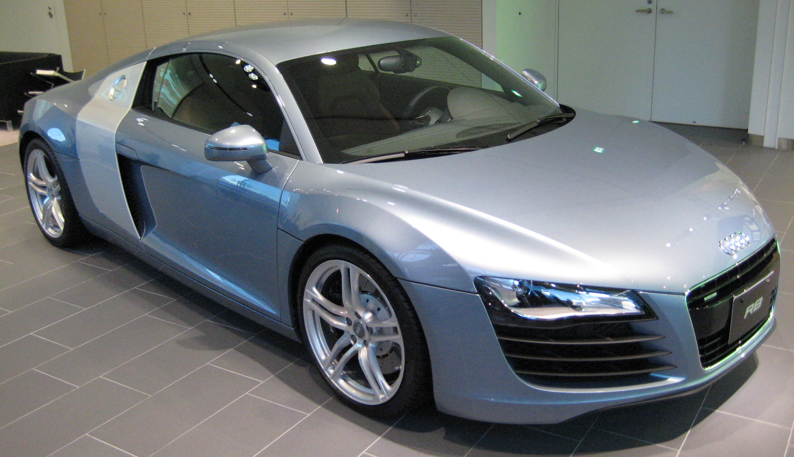 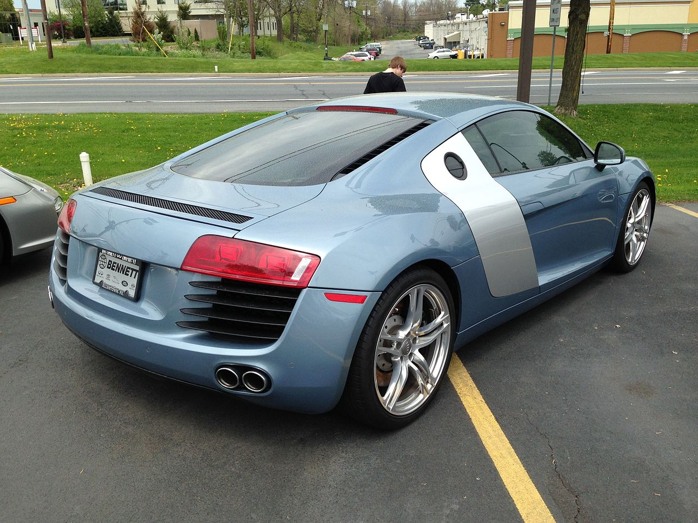
Родстер на базе Audi R8 — Audi R8 Spyder, был впервые замечен на съёмках фильма «Железный человек». После того, как шпионские фотографии со съёмок появились в интернете в 2008-м году, поползли слухи, что Audi готовит к премьере открытую версию R8. Так оно и оказалось — в 2009-м году на Франкфуртском автосалоне автомобиль был представлен широкой публике. На родстере была убрана уже ставшая «визитной карточкой» R8 панель на боку автомобиля, отличающаяся по цвету от остального кузова машины. Изначально на автомобиль устанавливался только 5,2-литровый двигатель V10 FSI.
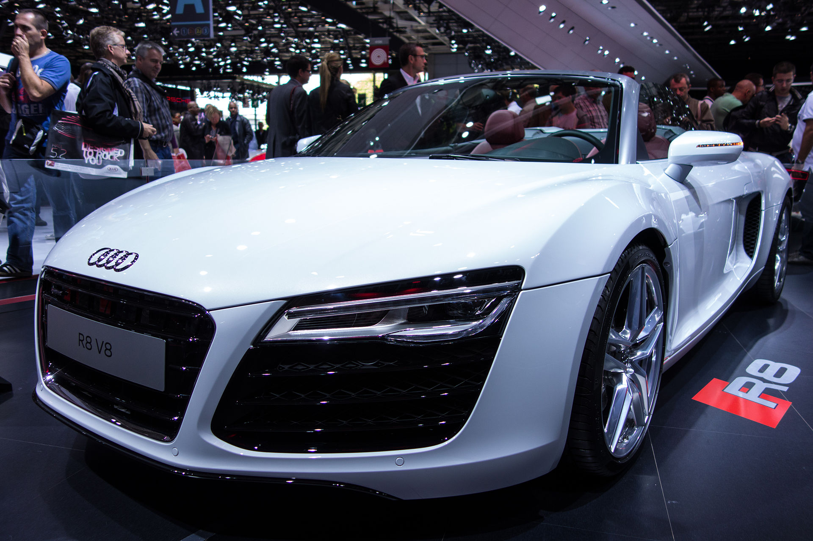 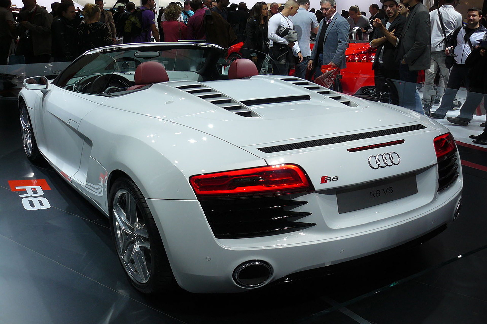
Модификация Audi R8 с 5,2-литровым атмосферным двигателем V10 мощностью в 525 лошадиных сил. Независимо от мотора, мощность передается посредством шестиступенчатой механической или автоматической коробки Audi R Tronic с помощью передаточного механизма, позаимствованного у Lamborghini Gallardo[5]. Кроме этого, R8 оснащена системой полного привода и лёгким кузовом из сплава алюминия. Дизайн автомобиля разрабатывался итальянским автомобильным дизайнером Вальтером де Сильвой и его дизайнерской командой. Салон украшен декоративными вставками из карбона и алюминия. Также автомобиль оснащается аудиосистемой Bang & Olufsen с 12 динамиками. На Audi R8 в стандартной комплектации устанавливаются 18-дюймовые диски с шинами размерности 235/40 на передней оси и 285/35 на задней.
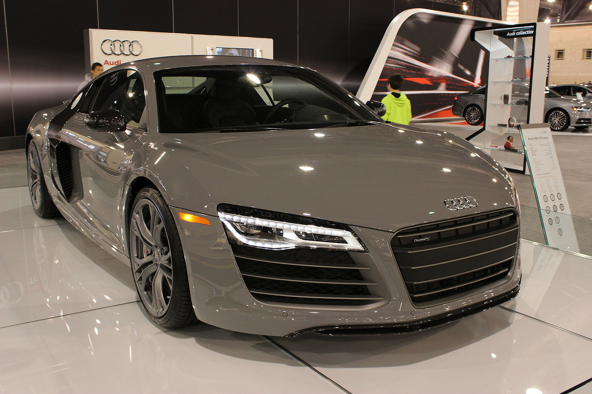 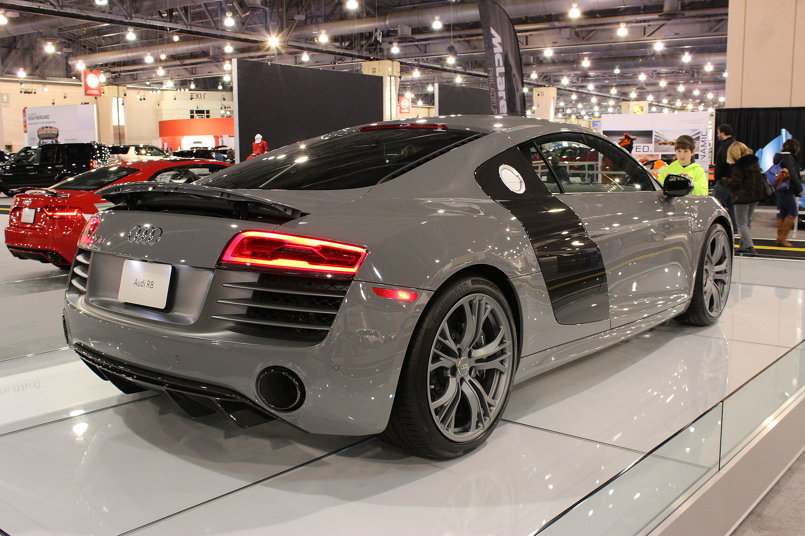
Родстер на базе Audi R8 — Audi R8 Spyder, был впервые замечен на съёмках фильма «Железный человек». После того, как шпионские фотографии со съёмок появились в интернете в 2008-м году, поползли слухи, что Audi готовит к премьере открытую версию R8. Так оно и оказалось — в 2009-м году на Франкфуртском автосалоне автомобиль был представлен широкой публике. На родстере была убрана уже ставшая «визитной карточкой» R8 панель на боку автомобиля, отличающаяся по цвету от остального кузова машины. Изначально на автомобиль устанавливался только 5,2-литровый двигатель V10 FSI
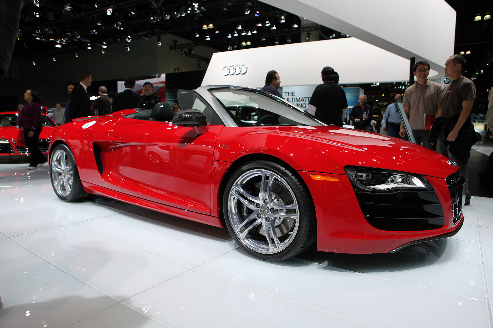 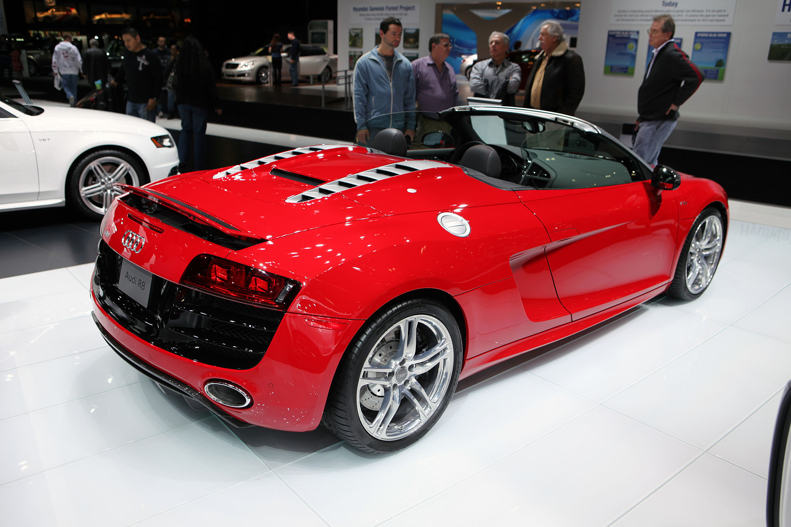
В мае 2010-го года была представлена Audi R8 GT — специальная версия суперкара, которая была произведена в количестве 333 экземпляров. От обычной Audi R8 V10, специальная версия отличается следующими параметрами:
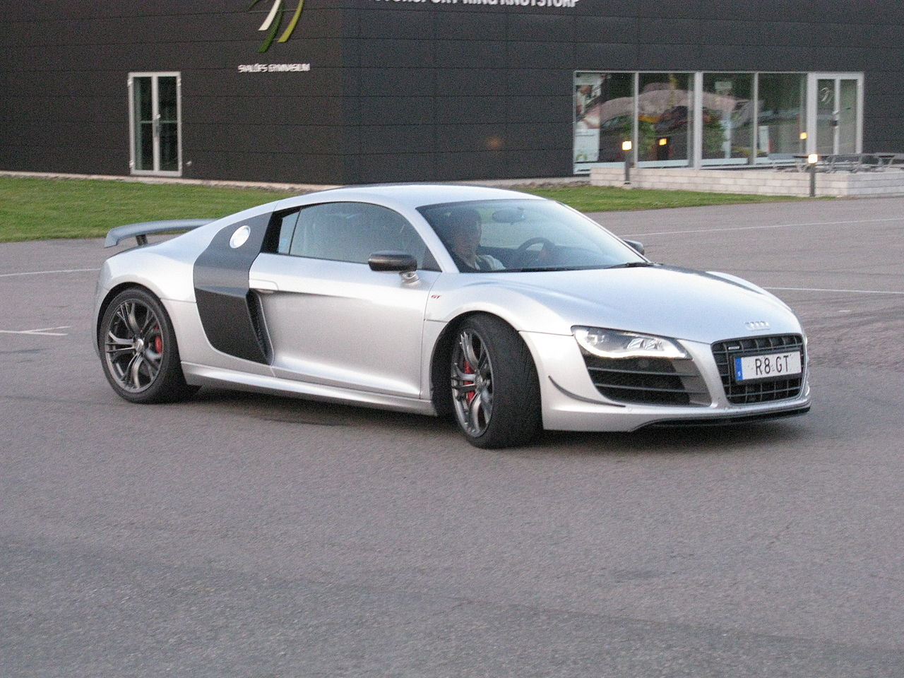 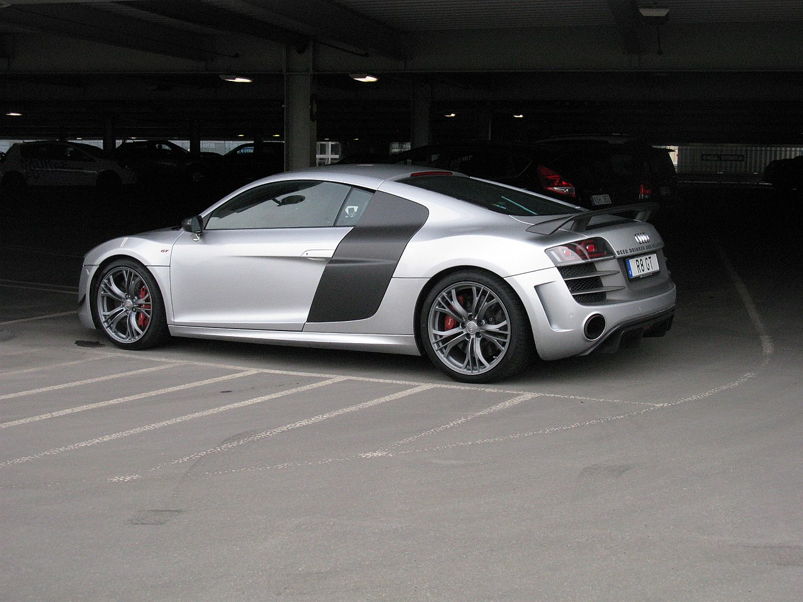
Существует и полностью электрическая версия R8 под именем e-tron. Модель имеет статус прототипа, но тем не менее собрано 12 экземпляров. Привод только задний — два электромотора на задней оси позволяются развивать 380 л. с. и 820 Нм крутящего момента, что позволяет разгоняться электрокару от 0 до 100 км/ч за 4,2 секунды. Максимальная скорость ограничена 200 км/ч электроникой. Сделано это с целью экономии электроэнергии, трата которой на более высоких скоростях чрезмерно высокая (см. энергетика). Центр тяжести у электрической R8 смещен вниз и это позволяет проходить крутые повороты гораздо увереннее, нежели бензиновые собратья. Этому также сильно способствует автоматическая электронная система регулировки крутящего момента Torque Vectoring, которая распределяет усилие на каждое колесо отдельно[12]. Общий вес Audi R8 e-tron 1770 килограммов. Большая масса вызвана высоким весом аккумуляторных батарей — свыше 500 кг. И это несмотря на полную переработку кузова.
Несмотря на внешнюю схожесть кузов e-tron почти целиком сделан из углепластика. Алюминиевая силовая структура была разработана с нуля. Даже пружины сделаны из армированного углеволокном стеклопластика. Применение таких дорогих материалов и технологий вызвало увеличение стоимости каждой машины до уровня свыше 1 миллиона евро. При этом Audi передумала продавать уже существующие прототипы в текущем кузове.
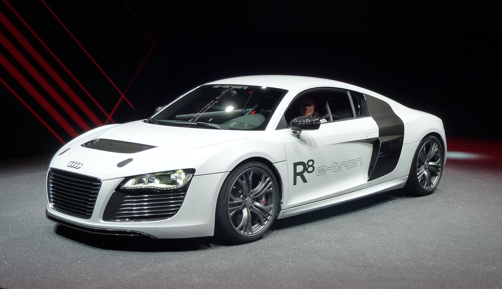 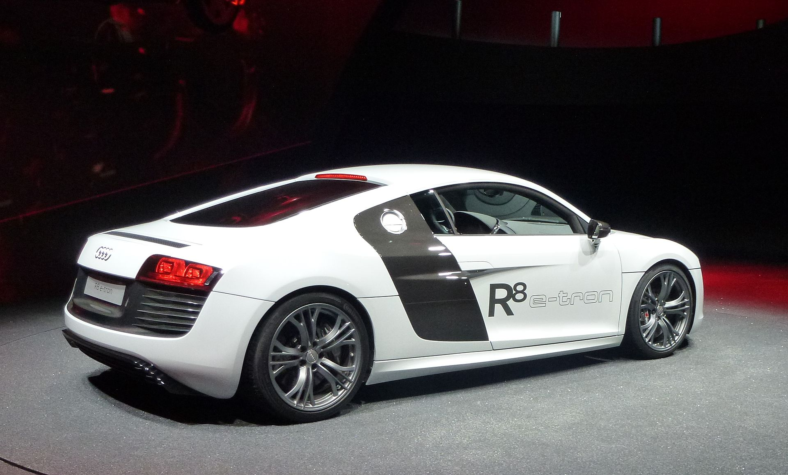